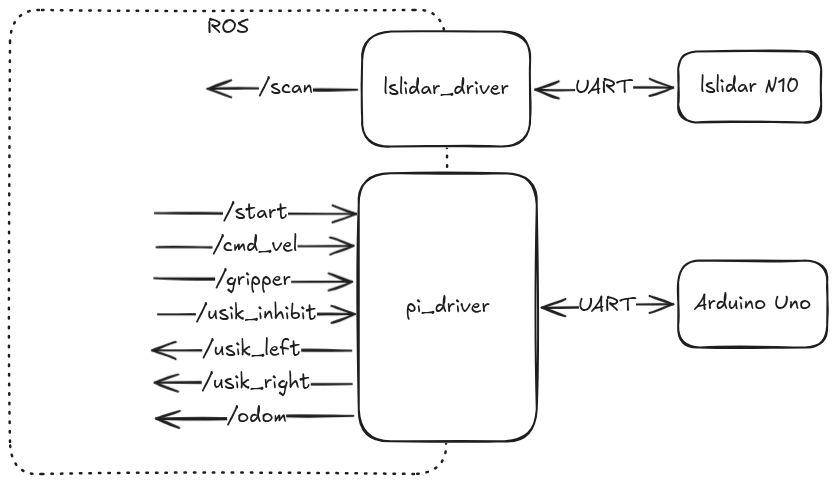

Прошивка одноплатного компьютера Raspberry Pi
Программа на Raspberry Pi представляет собой уровень Секвенсора трехуровневой архитектуры. Она агрегирует в себе все данные о роботе от Контроллера и Делибератора, формирует план действий и выдает уставки для Контроллера.
ROS
На роботе установлена RPi 4B. На ней поднят ROS Humble в виде Docker контейнера. Образцу работы с ROS через докер мы обязаны Дема Николаю и хакатону Starline.
Пара слов об управлении роботом через контейнер
Как вообще происходит общение ROS с внешним миром? У самого ROS нет никаких способов взаимодействия с чем либо кроме себя. В то же время микроконтроллер и лидар у нас подключаются физически по USB и общаются по UART.
Для взаимодействия с такими устройствами нам необходимо дать контейнеру доступ к физическим устройствам (к папке /dev/ в Linux) и сделать специальные ноды для взаимодействия с такими устройствами - драйвера.
Драйверы
В широком смысле драйвер - устройство или ПО для преобразования сигналов из одного формата в другой. Драйвер мотора преобразует слабый логический сигнал управления в силовой сигнал, подающийся на мотор. Драйвер принтера преобразует сигнал в виде файла на печать в поледовательность байтов, отправляемых на физический принтер через USB.
В контексте ROS мы называем драйвером такую ноду, которая обеспечивает связь с внешним миром и транслирует ROS-топики в соответствующие форматы для внешнего мира.

Драйвер лидара
У нас на роботе стоит лидар LSLidar N10 v1.0. Для него есть готовый драйвер от разработчиков, находящийся здесь.
Драйвер робота
Задача драйвера робота - подключится к Arduino Uno по установленному протоколу и перегонять команды из топиков ROS на Arduino и обратно. В коде это нода pi_driver в файле rpi_ws/workspace/src/pi_driver/pi_driver/pi_driver_node.py.
Протокол обмена:
Rpi-Arduino:
Обычное управление:
|0x01|left_motor_speed:float|right_motor_speed:float|gripper:byte|checksum:byte|
11 bytes
Arduino-Rpi:
Ответ на обычное управление:
|0x01|x:float|y:float|theta:float|usik_left:byte|usik_right:byte|checksum:byte|
16 bytes
При запуске драйвер ожидает команды на старт попытки. После получения этой команды он начинает общение с Arduino с частотой 10Гц.
Также в драйвере происходит обработка сигналов с усиков и при необходимости он перехватывает управление рботом и отъезжает назад во избежание столкновения. Подобное поведение можно описать как элемент архитектуры subsumption.
Управление роботом
Вся логика управления роботом сосредоточена в одной ноде tspa. Работа с топиками осуществляется как с датчиками и исполнительными узлами как в обычном микроконтроллере. Нода подписывается на необходимые ей топики и при получении данных сохраняет их в глобальные переменные. Таким образом, нода хранит самое актуальное состояние всей системы.
Локатор уточек
Данные с лидара при поступлении от драйвера лидара обрабатываются для получения координат ближайшей уточки. С точки зрения робота это выглядит как датчик, который дает координаты ближайшей к нам уточки. Ниже приведена анимация, иллюстрирующая работу алгоритма.
ВСТАВИТЬ АНИМАЦИЮ ЛОКАТОРА УТОЧЕК
Элементарные поведения
Поведение робота разбито на элементарные поведения, которые потом вызываются в определенном порядке для управления роботом. Список элементарных поведений:
- Ожидание старта попытки
- Ожидание цели
- Движение к цели
- Стыковка
- Захват
- Движение в зону
- Сброс в зону
- Ожидание по времени
В центре всей системы существует главный цикл main_loop, который вызывает поведения и выдает ими сгенерированные управляющие воздействия:
def main_loop(self):
clock = self.get_clock()
currenttime = clock.now()
self.usik_inhibit.data = False
self.timestate = currenttime.nanoseconds / 1e9 - self.timelastbeh
if self.current_behaviour == Behaviour.WAIT_TARGET_LIST:
self.get_logger().info(f'Waiting start ans list of ducks, start = {self.is_start}, duck list = {self.duck_class_mas}')
elif self.current_behaviour == Behaviour.WAIT_TARGET:
self.twist = Twist()
self.get_logger().info('Waiting for target')
elif self.current_behaviour == Behaviour.GO_TO_TARGET:
self.goToPose(self.duck_pose)
self.get_logger().info(f'Going to target {self.duck_pose}')
elif self.current_behaviour == Behaviour.DOCK_WITH_DUCK:
self.object_docking()
self.get_logger().info(f'Docking with duck {self.duck_locator}')
elif self.current_behaviour == Behaviour.GRAB_THE_DUCK:
self.twist = Twist()
self.twist.linear.x = 0.1
self.get_logger().info('Grabbing the duck')
elif self.current_behaviour == Behaviour.GO_TO_PBASE:
self.goToPose(self.baze_pose)
self.get_logger().info('Going to pbase')
self.usik_inhibit.data = True
elif self.current_behaviour == Behaviour.GO_TO_NBASE:
self.goToPose(self.enemy_baze_pose)
self.get_logger().info('Going to nbase')
elif self.current_behaviour == Behaviour.DROP_THE_DUCK:
self.twist = Twist()
self.twist.linear.x = -0.08
self.usik_inhibit.data = True
self.gripper.data = False
self.get_logger().info('Dropping the duck')
elif self.current_behaviour == Behaviour.WAIT_TIME:
self.twist = Twist()
self.get_logger().info(f'Waiting... {self.timestate}')
# self.get_logger().info(f'Current subs: {self.current_subs}')
self.get_logger().info(f'GPS: {self.robot_pose}, duck list: {self.duck_class_mas}, Control: {self.twist}, {self.gripper},{self.usik_inhibit}')
self.twist_pub.publish(self.twist)
self.gripper_pub.publish(self.gripper)
self.usik_inhibit_pub.publish(self.usik_inhibit)
Этот цикл вызывается ROS-таймером с частотой 10Гц.
Для каждого поведения определена управляющая логика, которая либо находится прямо в функции main_loop, либо находится в соответствующей функции (как например goToPose и object_docking).
Каждое поведение не блокирующее и выполняется очень быстро. Как же тогда реализованы задержки и переключения между ними?
Переключение поведений
Обычно, ноды запускаются в функции main командой rclpy.spin(node). Это запускает ноду и передает управление полностью ей. Однако в таком случае очень сложно делать сложные поведения и переключаться между ними. Требуется делать конечные автоматы, условия перехода и код получается очень громоздким и хрупким.
Мы пошли другим путем.
Для запуска поведения используется следующая конструкция:
def run_behaviour(node, behaviour, until = lambda: False):
node.set_behaviour(behaviour)
while rclpy.ok():
rclpy.spin_once(node)
if until():
break
Мы говорим ноде какое поведение мы хотим запустить. После этого мы входим в бесконечный цикл в котором постоянно вызываем функцию rclpy.spin_once(node), что позволяет ROS слушать паблишеры, юзать таймеры и отправлять данные в подписанные на нас ноды. А для того чтобы выйти из поведения мы используем условие until, которое мы называем условием выхода из поведения. Если условие сработает, то цикл завершается и мы переходим дальше по программе.
Общая логика программы
Имея подобную инфраструктуру мы можем описать логику поведения робота с помощью последовательности элементарных поведений. Наша итоговая логика в попытках выглядит так:
def main(args=None):
# ...
# Ждем пока нам не придет команда на старт попытки
run_behaviour(node, Behaviour.WAIT_TARGET_LIST, until = lambda: node.is_start == True)
while rclpy.ok():
# Определяем самую дорогую уточку и ждем пока мы ее не получим (на случай если от сервера еще не пришла информация о стоимости уточек)
node.give_best_by_first()
run_behaviour(node, Behaviour.WAIT_TARGET, until = lambda: node.duck_pos_number is not None)
# Определяем координаты уточки и двигаемся к ней пока не подъедем близко
node.duck_pose = mirror_cordination(cordination_ducks[node.duck_pos_number], is_A_baze)
run_behaviour(node, Behaviour.GO_TO_TARGET, until = lambda: \
(dist(node.robot_pose, node.duck_pose) < robot_gotopoint_dist_threshold or node.twist.linear.x < 0.03) and \
abs(node.err_theta) < 0.1 and node.timestate > 0.5)
# Стыкуемся с уточкой пока не захватим
run_behaviour(node, Behaviour.DOCK_WITH_DUCK, until = lambda: node.gripper.data == True)
# Захватываем уточку в течение одной секунды
run_behaviour(node, Behaviour.GRAB_THE_DUCK, until = lambda: node.timestate > 1)
# Определяем координаты базы и двигаемся к ней пока не подъедем близко
node.baze_pose = mirror_cordination(bazepos_centre, is_A_baze)
run_behaviour(node, Behaviour.GO_TO_PBASE, until = lambda: \
(dist(node.robot_pose, node.baze_pose) < robot_gotopoint_dist_threshold or node.twist.linear.x < 0.03) and \
abs(node.err_theta) < 0.1 and node.timestate > 0.5)
# Сбрасываем уточку и чуть-чуть ждем
run_behaviour(node, Behaviour.DROP_THE_DUCK, until = lambda: node.timestate > 2)
run_behaviour(node, Behaviour.WAIT_TIME, until = lambda: node.timestate > 1)
# Начинаем цикл снова
Подобный подход позволяет легко писать сложные поведения, не теряя при этом в качестве работы регуляторов и в быстродействии робота.